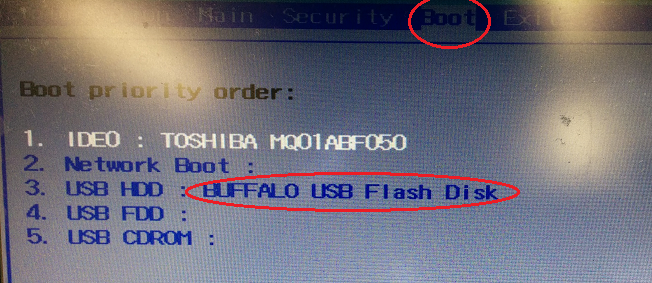
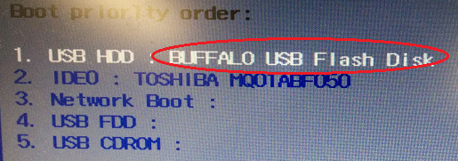
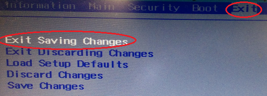

第142回 ロボット工学セミナー
ロボットの作り方
～移動ロボットの制御とROSによる動作計画実習～
用意するもの
WiFiへの接続が可能なノートパソコンあるいはデスクトップパソコン
本手順によりパソコンの既存のOS（Windows等）及び保存されているデータやソフトウェアは完全に削除されます。予めバックアップを行ってください。
- インターネット接続
- 容量4GB以上の空USBメモリ
- モニター1台
- キーボード
- HDMIケーブル
- マウス
- 容量4GB以上の空SDカード（第142回ロボット工学セミナー経由で実習キットを購入されていない方のみ）
リモートPCのセットアップ
下記の手順に従わず、VirtualBoxやDockerなどの仮想環境をご自分で構築した上でセミナーへの参加もいただけますが、正常動作しない場合への対応はできかねますので自己責任でお願いします。
Ubuntuのダウンロード
下記のリンクからUbuntu 18.04 64bit Desktopのインストールイメージ、ubuntu-18.04.x-desktop-amd64.iso（xはバージョン番号）をダウンロードしてください。
- 本セミナーでは、Ubuntu 18.04 64bit Desktop版の使用を想定して説明します。
- ネットワーク環境によっては、ダウンロードが完了するまで10分ほどかかる場合があります。

Ubuntu Install用USBの作成
- 下記のURLから、Install用USBの作成ソフトをダウンロードしてください。
- WindowsとMac OS Xの場合：https://unetbootin.github.io/
USB作成に使用しているPCのOSを選択してください。

- Linux（Debian/Ubuntu）の場合：下記のコマンドをターミナルから実行してください。
$ sudo add-apt-repository ppa:gezakovacs/ppa
$ sudo apt-get update
$ sudo apt-get install unetbootin以降の説明は、Windowsを例にして行います。
- 誤って必要なデータを削除してしまうことを防ぐために、使用するUSB以外のメモリ媒体は取り外しておくことをおすすめします。
また、使用するUSBメモリはデータが入っていない空の状態にしてください。
（インストール用USBを作成するPCとUbuntuをインストールするPCはそれぞれ別のものでも構いません。） ダウンロードしたunetbootin-windows-???.exe（Windowsの場合）を実行します。
次のように「WindowsによってPCが保護されました」という画面が表示された場合は、「実行」ボタンをクリックしてください。
また、次のようにユーザアカウント制御画面が表示された場合は、「はい」をクリックしてください。

-
UNetbootinの画面で、「ディスクイメージ」を選択し、「...」ボタンをクリックして先ほどダウンロードした
ubuntu-18.04.x-desktop-amd64.isoファイルを選択します。また、「スペースは、リブートしてもファイルを維持するために使用」欄に「4096」と入力し、「ドライブ」欄で、使用するUSBメモリのドライブ名を選択してください。
内容を確認後、「OK」をクリックしてください。
書き込みが完了されるまで、しばらく待機します。
USB2.0の場合は10分以上、書き込み速度の遅いUSBメモリだと30分程度かかる場合があります。また、文字が描画されていないウィンドウが表示されることがあるようですが、ウィンドウ右上の「X」ボタンを押して閉じても問題ないようです。
下記の「永続性を設定する」画面で「応答なし」と表示される場合がありますが、正常に動作していますので、そのまま待機してください。

次の画面が表示されましたら、Install用USBの作成は完了です。
終了をクリックしてください。
-
Install用USBから起動するためのBIOSの設定を行います。
セミナーで使用するPCの電源を切り、下記の手順で作成したInstall用USBを接続した状態で起動します。
起動時に、BIOS設定画面に入ります。
PCのメーカー毎にBIOSへの入り方が異なりますので、マニュアル等で確認してください。次からの図は、Acer社のPCのBIOS設定画面を例に説明します。

BIOS設定画面に入ったら、起動順（Boot order, Boot priority）の設定で、USBメモリが最優先になるように設定します。
（画面は使用しているPCおよびUSBメモリのメーカーによって異なります。）

設定を保存して再起動します。

Ubuntuのインストール
- Install用USBをパソコンに接続し、パソコンの電源を入れます。
- "GNU GRUB"のメニューが表示されたら、"Install Ubuntu"を選択します。
- 次の画面で言語を選択し、"続ける"ボタンを押します。その後、キーボードやネットワークに関しても環境に合わせて設定を行ってください。
- 以下の設定では、「通常のインストール」を選択してください。

- 以下の設定では、「ディスクを削除してUbuntuをインストールする」を選択してください。

- インストール完了後、Install用USBを取り外し、未接続の状態でパソコンを再起動すると次の画面が表示されます。

これでUbuntuのインストールは完了です。
ROS Melodicベースパッケージのインストール
注意
本章の内容は、TurtleBot3を制御する
リモートPC(Ubuntu18.04がインストールされたデスクトップまたは、ノートパソコン)に対応しています。この手順は、TurtleBot3で実施しないでください。
下記のスクリプトを使用すると、ROS Melodic(ROS)のインストール手順を簡略化できます。
ターミナルウィンドウでこのスクリプトを実行します。
ターミナルアプリケーションは、画面の左上隅にあるUbuntu検索アイコンから起動できます。
もしくは、ターミナルのショートカットキーCtrl+Alt+tを使用して起動できます。
ROSをインストールした後、リモートPCを再起動してください。
【リモートPCで実施】
$ sudo apt-get update
$ sudo apt-get upgrade
$ wget https://raw.githubusercontent.com/ROBOTIS-GIT/robotis_tools/master/install_ros_melodic.sh
$ chmod 755 ./install_ros_melodic.sh
$ bash ./install_ros_melodic.sh
注釈: インストールされるパッケージを確認するには、次のリンクを確認してください。
上記のインストールが失敗した場合、以下を参考にしてください。
ROS依存パッケージのインストール
リモートPCにROS依存パッケージをインストールする手順です。
【リモートPCで実施】
$ sudo apt-get install ros-melodic-joy ros-melodic-teleop-twist-joy \
ros-melodic-teleop-twist-keyboard ros-melodic-laser-proc \
ros-melodic-rgbd-launch ros-melodic-depthimage-to-laserscan \
ros-melodic-rosserial-arduino ros-melodic-rosserial-python \
ros-melodic-rosserial-server ros-melodic-rosserial-client \
ros-melodic-rosserial-msgs ros-melodic-amcl ros-melodic-map-server \
ros-melodic-move-base ros-melodic-urdf ros-melodic-xacro \
ros-melodic-compressed-image-transport ros-melodic-rqt* \
ros-melodic-gmapping ros-melodic-navigation ros-melodic-interactive-markers
リモートPCにTurtleBot3を制御するための依存パッケージをインストールする手順です。
【リモートPCで実施】
$ sudo apt-get install ros-melodic-dynamixel-sdk
$ sudo apt-get install ros-melodic-turtlebot3
$ sudo apt-get install ros-melodic-turtlebot3-gazebo
TurtleBot3のモデル名の設定
環境変数TURTLEBOT3_MODELモデルにデフォルト名を設定します。以下のコマンドを端末に入力し、環境変数の設定と反映を行います。
$ echo "export TURTLEBOT3_MODEL=burger" >> ~/.bashrc
$ source ~/.bashrc
catkin_make次に、コマンドへのパスが通っていることを確認します。
以下のコマンドを実行後、/opt/ros/melodic/bin/catkin_makeといったパスが表示されれば、正しく設定できていることになります。
【リモートPCで実施】
$ which catkin_make
何も表示されない場合、環境変数設定に不備が考えられるため、以下のコマンドを再実行してください。
【リモートPCで実施】
$ source ~/.bashrc
ネットワーク構成
TurtleBot PCとリモートPCの間で通信をするためにIPアドレスが必要です。リモートPCとTurtleBot PCは、同じwifiルーターに接続する必要があります。
リモートPCのターミナルに次のコマンドを入力し、IPアドレスを確認します。
【リモートPCで実施】
$ ip address show
赤枠部分が、リモートPCのIPアドレスです。
(環境によってIPアドレスが異なる場合があります。また、"/24"の部分は含みません。)

以下のコマンドを入力し、~/.bashrcを開きます。
【リモートPCで実施】
$ nano ~/.bashrc
Alt + / を入力するとファイルの最終行へ移動します。
ROS_MASTER_URIとROS_HOSTNAMEのlocalhostのIPアドレスを、上記のターミナルウィンドウから取得したIPアドレスに変更します。(下図、赤枠部分)
修正後、ファイルを保存(Ctrl + s → enter)し、編集を終了（Ctrl + x）します。
次に、以下のコマンドでbashrcを実行します。
【リモートPCで実施】
$ source ~/.bashrc
以上でリモートPCの開発環境構築は完了です。
TurtleBot側のRaspberry Piのセットアップ
警告
- この章の内容は、TurtleBot3 Burgerの制御コンピューターとなる
Raspberry Pi)に対応しています。本項の設定内容をリモートPC（デスクトップPCまたは、ノートパソコン）で実施しないでください。- セットアップ作業には、電源と時間が必要なためバッテリーは適していません。この作業では、SMPS(ACアダプタ)の使用を推奨します。
第142回ロボット工学セミナー経由で実習キットを購入された方は、付属のSDカードに適切なイメージが記録されているので、下のWiFiネットワーク設定を構成するから実施ください。 また、TurtleBot3 Burger RSJ工学セミナー S142クイックスタートページもあわせて御覧ください。
もし、お持ちのTurtleBot3 BurgerにROS Melodicがインストールされていない場合、こちらより、Raspberry PiにROS Melodicのインストールを実施する必要があります。
画面上部のROSバージョン選択箇所において、’Melodic’を選択ください。
3.2.1 "microSDカードとリーダーを準備する"から、3.2.4.2 "ディスクユーティリティ" まで実施してください。
WiFiネットワーク設定を構成する
TurtleBotの制御コンピュータであるRaspberry Pi（以下、SBC）を起動します。
以下の手順で、SBCを起動し、ログインしてください。- キーボードをSBCのUSBポートに接続します。
- SBC用起動イメージが格納されたmicroSDカードを、SBCに挿入します。SBCに電力を供給する前に、HDMIケーブルを接続する必要があります。接続しないと、SBCのHDMIポートが無効になります。
- 電源を接続して、SBCをパワーオンします。
- アカウント"ubuntu"、パスワード"turtlebot"でログインします。
WiFiの設定ファイルを修正します。下記のコマンドを入力してください。
【SBCで実施】$ cd /etc/netplan
$ sudo nano 50-cloud-init.yamlエディターが開いたら、
WIFI_SSIDとWIFI_PASSWORDをWi-FiSSIDとパスワードに置き換えます。（下イメージ緑文字部分）修正後、ファイルを保存(
Ctrl + s→enter)し、編集を終了（Ctrl + x）します。
下記のコマンドを入力して、SBCを再起動してください。【SBCで実施】$ sudo reboot
ROSのネットワーク設定
SBCの再起動後、リモートPCのセットアップと同様（参照）にSBCのIPアドレスを調べる（wlan0の箇所）。
【SBCで実施】
$ ip address show
エディタにて~/.bashrcを開きます。
【SBCで実施】
$ nano ~/.bashrc
下図のように、環境変数ROS_MASTER_URIとROS_HOSTNAMEのIPアドレスを、それぞれリモートPCのIPアドレスとSBCから取得したIPアドレスに変更します。

修正後、ファイルを保存（Ctrl + s → enter）し、編集を終了（Ctrl + x）します。
さきほど修正した設定を反映するため、~/.bashrcを編集したターミナルにて、 以下を実行します。
（~/.bashrcの修正により、今後、新規にターミナルを開いた時は自動で設定が反映されます）
【SBCで実施】
$ source ~/.bashrc
リモートPCからSBCへの接続方法
ワイヤレス構成が完了したら、デスクトップまたはノートパソコンからSSH経由でSBCに接続できます。
まずは、リモートPCとSBCでSSHをインストールします。
SBCにログイン後、以下を実行してください。
【SBCで実施】
$ sudo apt-get install ssh
SBCでSSHを有効にします。
【SBCで実施】
$ sudo service ssh start
$ sudo ufw allow ssh
次に、リモートPCからSBCに接続します。リモートPCにログインし、次のコマンドを入力してください。
【リモートPCで実施】
$ ssh ubuntu@192.168.YY.YY（@のあとはSBCのIPアドレス）
パスワードの入力を求められたら、turtlebotを入力してください。
また、初めて接続する場合、接続を継続するかを聞かれますので、yesを入力してください。
もし、接続ができない場合には、下記の事項を確認してみてください。
- sshで指定しているIPアドレス、アカウント、パスワードに誤りがないか
- リモートPCとSBCを同じwifiルーターに接続しているか
ネットワーク接続はセミナー参加者の皆様の環境に大きく依存しますので、ネットワークに接続できない、という旨の質問をいただいても回答が困難な場合が多いです。所属組織のネットワーク管理者の方に相談するなど、事前によくご確認ください。
以上で事前準備は完了です。
お疲れ様でした。
ご参考
昨年度の” ロボットの作り方セミナー”にて、発生した問題についてまとめたテキストは以下になります。ロボットが正常に動作しない場合に参考になさってください。
RSJロボット工学セミナー 第131回 レポート Issue ロボットとPCが通信できない。(ロボットが動作しない) 1. ROS_MASTER_URI、ROS_HOSTNAME(ROS_IP)が間違っている。 解決方法：適切な値に変更する。 2. 同一ネットワーク上にノードがない。(VMを使用した時に発生しやすい) 解決方法：同一ネットワーク上に配置する。 3. USBが断線している 解決方法：USBケーブルを挿し直す。OpenCRとRaspberryPiのUSBが抜けている事が多かった。 4. OpenCRのセットアップが終わっていない 解決方法：以下の手順を再度やり直す。 https://emanual.robotis.com/docs/en/platform/turtlebot3/opencr_setup/#opencr-setup 5. Dynamixelのケーブルが断線している 解決方法：ケーブルを挿し直す。 6. DYNAMIXELがブート(LEDは点灯)しているが動作しない。 解決方法：DYNAMIXEL Wizrd2.0を使用して再設定する。 ※根本的な原因は不明だが、OpenCRのスイッチを押してDYNAMXIELの動作確認をする時にまれに変更される場合がある。 7. シミュレーションが動作しない 解決方法：初回起動で時間がかかっている場合が多い。 8. ビルドエラーが起きる。 解決方法：必要なパッケージがインストールされていない。 セットアップ手順をやり直す。 https://emanual.robotis.com/docs/en/platform/turtlebot3/quick-start/#pc-setup もしくはrosdepを使って依存関係を解決する。 $ sudo apt-get install python-rosdep $ rosdep init $ rosdep update $ rosdep install -i --from-paths path-to-ros-package 9. ノードを起動するとエラーが起きる。 解決方法：必要なパッケージがインストールされていない。 セットアップ手順をやり直す。 https://emanual.robotis.com/docs/en/platform/turtlebot3/quick-start/#pc-setup もしくはrosdepを使って依存関係を解決する。 $ sudo apt-get install python-rosdep $ rosdep init $ rosdep update $ rosdep install -i --from-paths path-to-ros-package 10. テレオペコマンドで前後逆に動作する。 解決方法：DYNAMIXELが左右逆に取り付けられているため、ハードウェアを組み直す。 https://emanual.robotis.com/docs/en/platform/turtlebot3/hardware_setup/#hardware-assembly 11. ノードは起動するが動作しない。 解決方法：PCとロボットの時刻がずれている。 ntpdateを使って同期する。 $ sudo apt-get install ntpdate $ sudo ntpdate ntp.ubuntu.com 手動の場合は以下のコマンドで設定する。 $ date -s "01/22 13:00:00 2021" 12. ロボットモデルが読み込まれない。 解決方法：ロボットモデルの設定を読み込み直す。 $ export TURTLEBOT3_MODEL=burger 13. ネットワークの設定はあっているが動作しない 解決方法：.bashrcを読み込み直す。 $ source ~/.bashrc ※.bashrcは、ターミナルの起動時に読み込まれるので変更してから読み込み直さないと適応されない。 14. ROSのコマンドが使えない。 解決方法：ROSの環境設定を再度実施する。 $ source /opt/ros/<distro>/setup.bash
連絡先
woo_at_cc.kogakuin.ac.jp